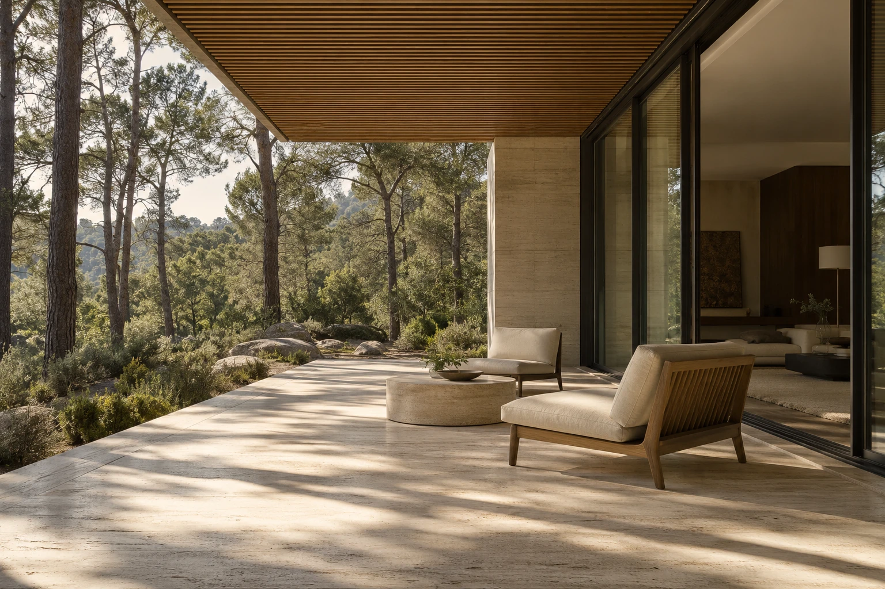

Частные дома / Интерьеры
Дом начинается
с вашей жизни.
Как вы проводите утро.
Где собираетесь всей семьёй.
Когда хочется побыть одному.
С этих вещей начинается проект.


Исследование 01
Открыто природе.
Продумано для жизни.
Одноэтажный дом с общей зоной, которая выходит на террасу. Большие окна впускают дневной свет, а отдельная приватная часть сохраняет тишину.
- Площадь концепта
- 240 м²
- Организация
- 1 этаж
- Материалы
- Камень
Дерево
Стекло
Вымышленный объект. Изображения и параметры подготовлены для концепта сайта.
Логика пространства
Рядом, когда нужно.
Тихо, когда хочется.
Общее и личное не мешают друг другу. Посмотрите, как разные зоны могут складываться в один дом.
Схема показывает идею зонирования, а не рабочий архитектурный чертёж.
Место, где встречаются.
Кухня, столовая и гостиная продолжают друг друга. Можно готовить, разговаривать и собираться за одним столом, оставаясь в общем пространстве.
Кухня / Столовая / ГостинаяЧто делает дом своим
Удобно жить.
Приятно возвращаться.
Планировка под привычки
Общая кухня-гостиная, тихий кабинет или место для большой семьи. Сначала определяем сценарии, затем распределяем пространство.
Свет в нужном месте
Ориентация окон и глубина комнат влияют на весь день в доме. Учитываем их вместе с планировкой.
Материалы, которые сочетаются
Камень, дерево и стекло поддерживают общую идею. Подбираем фактуры без случайных деталей.
Тактильная палитра
Не только смотреть.
Чувствовать.
Материалы работают вместе: спокойный камень, живое дерево и мягкая поверхность стен. У каждой фактуры своя роль.
Светлая каменная поверхность объединяет пол и террасу. Её рисунок остаётся сдержанным фоном для дерева, света и предметов.

Исследование 01 / Пространство между домом и лесомГраница становится местом
Ещё одна комната.
Под открытым небом.
Терраса продолжает общий сценарий дома: завтрак на воздухе, разговор вечером, тишина в выходной. Навес, открытый вид и связь с гостиной делают её частью повседневной жизни.
Как рождается проект
От разговора
к пространству.
Понятная последовательность помогает принимать решения вовремя — и видеть, как идея становится проектом.
01Знакомимся с задачей
Обсуждаем участок, состав семьи и образ жизни. Собираем пожелания, ограничения и приоритеты в одном брифе.
02Собираем концепцию
Сравниваем планировки и объёмы, ищем положение дома на участке. Уточняем решения вместе с владельцами.
03Продумываем детали
Согласуем материалы, освещение и взаимосвязь помещений. Детали продолжают идею, заложенную в концепции.
Из чего складывается проект
Идея получает
понятную форму.
В концепте бюро показано, как можно объяснять состав работы — от первых схем до визуального языка будущего дома.
- 01
Планировочные решения
Расположение комнат, взаимосвязи зон и сценарии перемещения. Основа для дальнейших решений.
- 02
Объём и фасады
Пропорции дома, окна, вход и связь с участком. Внешний образ следует внутренней логике.
- 03
Палитра материалов
Сочетание фактур и оттенков для интерьера и экстерьера. Детали поддерживают общую идею.
- 04
Визуальная концепция
Изображения, которые помогают представить пространство и обсудить его до реализации.
Начнём с вашего замысла
Есть участок.
Есть идея.
Опишите место и то, каким вы видите будущий дом. Бриф поможет собрать первые вводные.
Демонстрационная форма. Данные остаются у вас.